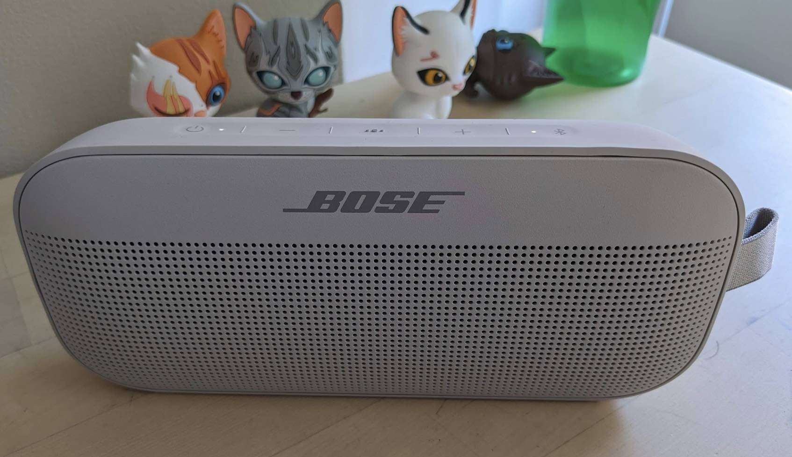

Table of Contents
1. はじめに
以前BoseのHome Speaker 500を 買った のですが、すっかりプロジェクター専用になっています。 仕事中のBGMや旅行用としてポータブルスピーカーが欲しかったので、ずっと目をつけていたBoseの SoundLink Flexを購入しました。

2. SoundLink Mini
ポータブルスピーカーと言えば、初めてBoseのSoundLink Miniを見たときの衝撃が忘れられません。現行品はこちら → SoundLink Mini II Special Ediiton
あの小さいデバイスからは信じられないようなパワフルな低音が響き、しばらく聞き惚れていました。 その後数年間、アウトレットに行く度にBoseショップをウオッチし、お買い得価格になるのを待っていましたが、Bose製品だけあって大して値段が下がらず、購入する機会を逸してしまいました。
3. SoundLink Flex
候補として、Bang & Olufsenの Beosound a1 とMarshallの Emberton も考えたのですが、Webでの評判を見て Bose SoundLink Flexに決めました。
購入済みのBoseのHome Speaker 500は満足度の高いスピーカーでしたが、それと比べてどうでしょうか。
3.1. 音質
肝心な音質は、「こんなものかな」という程度でした。初めてSoundlink Miniを聞いたときのような衝撃は無く、Home Speaker 500と比べると、明らかに物足りません(特にボリュームを絞った時)。若干音のクリア感(高音の抜け)に欠けるように思いました。Home Speaker 500はAir Playでつなげるか、Spotifyの場合はスピーカー上のアプリから直接音が出ているので、そのせいもあるかも。また、ピアノのアタック音がはっきりせず、こもったように聞こえます。
まあ、Home Speaker 500購入価格の半額ですし、アウトドアでの使用も想定している電池駆動のBluetoothスピーカーですから、音質が違うのは当たり前でした。ただ、ピアノソナタは聞いていて残念な感じです。
3.2. サイズ
20.14 x 9.04 x 5.23 cm、重さ580gで、少々重くて嵩張ります。普段からかばんに入れておく気にはならないですね。バッテリーと音質を考えると、580gは頑張っていると思います。
3.3. 接続性
インストラクションを見たら、最初にBose Connectというアプリをインストールするように書いてありました。Home Speaker 500を買った時に入れたBose Musicアプリとは別物です。Bose MusicアプリからSoundLink Flexが検出できないので、おかしいと思って調べたら別アプリでした。
アプリからFlexにつなぐのに、少し待たされます。Bluetooth接続って、こんなに時間がかかるものなんでしたっけ。
いったん接続すれば特に問題はありません。うちのアパートはメゾネットタイプなのですが、上階の机の上にあるMacBookからSpotifyの音楽を飛ばしながら、斜め下にある下の階のダイニングキッチンまでSoundLink Flexだけ持って行ったところ、接続は切れませんでした。これはいいですね。
3.4. バッテリー駆動
Home Speaker 500はバッテリーを持っておらず、コンセントから給電されます。これが音質の良さに効いているのですが、実際の大きさや重さ以上に移動させるのが面倒に感じます。一方、SoundLink Flexはバッテリー駆動なので、このわずらわしさがありません。Bluetoothの接続も簡単には切れないので、自分が移動する場所に気軽に持ち運べます。プレイ時間も公称12時間と十分です。
3.5. 本体操作性
SoundLink Flexの上面に電源やBluetoothオンオフ、ボリューム上下等のボタンがあります。アウトドアでの使用を想定されているせいと思いますが、これらのボタンが押しづらいです。ぐいっと押し込まないと駄目なので、音源であるスマホやPCで操作する方が楽です。
3.6. ストラップ
carabinerを使ってかばんからぶら下げることを想定したストラップが付いています。これは短いので手で持つのには向いていません。ギミックとしてはよいですが、実用性はあまり無いかな。アウトドアで移動中でも無い限り、スピーカー前面がこちらに向くように置くと思います。スピーカー面がこちらを向いていないと、音が少々残念なことになるので。
4. 終わりに
音質に多少妥協すれば、Bose SoundLink Flexは良いポータブルスピーカーだと思います。流石に電源駆動で4倍近い重さのHome Speaker 500の音質や、おそらく記憶の中で美化されまくっているSoundLink Miniの衝撃と比べるのはフェアじゃありませんね。SoundLink Flexも少しボリュームを上げると、比較的素直な良い音を鳴らします。買ってよかったです。